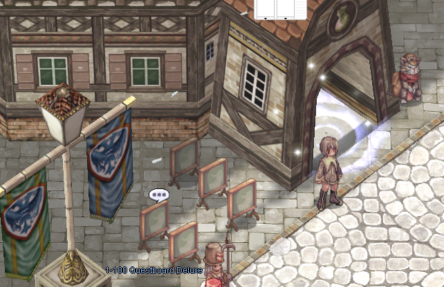
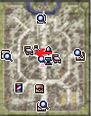

Contenido destacado
Episode 18: Direction of Prayer
Viaja a Rachel y Gray Wolf Village en una historia marcada por la tensión entre
nativos desplazados e inmigrantes que han tomado el control, mientras una trama
oscura se mueve detrás del conflicto.
Requiere nivel base 170 y progreso previo en Episode 17.2: Legacy of the Wise One.

Leveling
Questboards repetibles
NikaRO cuenta con tablones de misiones repetibles pensados para acompañar el leveo
desde niveles bajos hasta contenido avanzado. Las misiones están separadas por rangos
para mantener la interfaz clara y entregar objetivos adecuados al nivel del jugador.
- Tablones de leveo 1-99, 100-260 y opciones adicionales por rango.
- Kill credit compartido con miembros de party dentro del rango permitido.
- Misiones high-level y weekly hunts con Loyalty Coins como recompensa.
- Weekly Hunt con reset semanal, progreso persistente y opción de abandonar misión.
Ubicación
Tablones en Prontera
Los tablones de misiones se encuentran cerca del centro de Prontera. Usa el minimapa
como referencia visual para ubicar rápidamente las opciones de leveo y misiones de lealtad.

Drops especiales
Drops por mapa
Algunos mapas tienen drops adicionales directos al inventario. Usa
@mapdrops para revisar si el mapa actual tiene recompensas activas.
- Bar Meal Ticket en mapas seleccionados de Episode 18.
- Ep18 Amethyst Fragment en mapas como oz_dun, ra_fild10 y gw_fild.
- Blacksmith Blessing y otros drops pueden estar ligados a eventos o grupos específicos.
Eventos y custom systems
Minijuegos y eventos
El servidor incluye eventos como Bombring, Cluckers y dinámicas comunitarias en Prontera.
Las recompensas pueden incluir Loyalty Coins, costumes, cash items u otros premios según el evento activo.